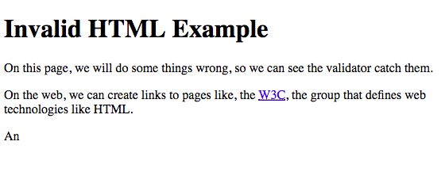

CMPT 165
Introduction to the Internet
and the World Wide Web
Unit2: Markup and HTML
Topics
- Text Files and Markup
- HTML and Tags
- Attributes and More HTML Tags
- Semantic Markup
- Validating HTML
- URLs: Links and Images
- Character References
Invalid HTML Example

we know that every (non-empty) tag must be closed
what if one is not closed?
how will a web browser or a mobile browser, or Google, or other tools that read HTML interpret that markup?
Invalid HTML Example
Invalid HTML Example
<p>… the <a href="http://www.w3.org/">
<abbr title="World Wide Web
Consortium">W3C</a>,
the group that …</p>
- Which one is the correct render ?
… the W3C, the group that …… the W3C, the group that …
HTML Validation will prevent rendering inconsistency errors in different browsers!
HTML validator
a tool that compares our document against the rules of HTML markup and tells us if there are any problems
the best validator to use is http://validator.w3.org/
if the validator gives many errors, fix the first one and then try validating again
lets try the validator with
http://www.cs.sfu.ca/CourseCentral/165/common/study-guide/files/invalid.html
The Robustness Principle
when two pieces of software are communicating
- the one sending out information should be very careful what it sends, to make sure that the receiver understands it
- the receiver should do its best to gracefully handle small errors in what it receives
The Robustness Principle
If both sides uphold their end of this bargain, everything should be transmitted correctly and there should be no errors or miscommunication
The Robustness Principle
CLAIM: considering this principle, all the sentences provided here carry the same information,
do they really do so ?
- You are smart
- Smart is a thing that you is
- LOL ur smrt!!!
- It is smart is a kind of thing you are
URLs: Links and Images
<img> tag
used to refer to images
so they can be displayed on the page
<img src="http://example.com/vacation.jpg" alt="My vacation" />
the src attribute is used to give the URL of the image
the alt attribute gives alternate text
text that can be displayed in place of the image if it cannot be loaded
Different Types of URLs
- Absolute URLs
- Relative URLs

Absolute URLs
- the URLs that we have seen so far are absolute URLs
- absolute URLs contain a scheme, server, and path as described before
- absolute URLs can be used to locate a piece of content on the web with no other information or context
Relative URLs
- they refer to content by giving its position relative to the current page
- they give information like in the same folder, find the page nextpage.html or look in the folder images for the image selfie.jpg
Relative URLs
Different types of relative addressing
- referring to the same folder as current html file (itself)
- referring to a folder inside the containing folder (its children)
- referring to a folder containing the containing foldr (its parents)
 * image from http://www.cs.sfu.ca/CourseCentral/165/common/study-guide/figures/directory-structure.svg
* image from http://www.cs.sfu.ca/CourseCentral/165/common/study-guide/figures/directory-structure.svg
Relative URLs | Current Folder Example
<p>
<a href="nextpage.html">next page</a>
<img src="happy.png" alt="happy face" />
</p>
Relative URLs | Children Folders Example
<p>
<a href="vacations/europe.html">European vacation</a>
<a href="vacations/pictures/eiffel.jpg">
us at the Eiffel Tower
</a>
<img src="vacations/pictures/eiffel.jpg" alt="Eiffel Tower" />
</p>
Relative URLs | Parent Folders Example
<p>
<a href="../menu.html">back to the menu</a>
<a href="../../submenu.html">back to the submenu</a>
<img src="../../vacations/pictures/big-ben.jpg" alt="Big Ben" />
</p>
Important Points
-
URLs are case sensitive
(page.html is a different URL than Page.html or PAGE.HTML) - slash (/) is the only character used to separate folders/filenames in URLs
Character References for Special Characters
| Character | Reference | Description |
|---|---|---|
| < | < | less-than (usually starts a tag) |
| > | > | greater-than (usually ends a tag) |
| & | & | ampersand (usually starts a reference) |
| " | " | double quote (usually wraps attribute values) |
| ' | ' | apostrophe/single quote (can wrap attribute values) |
Other Character References
| Character | Reference | Description |
|---|---|---|
| € | € | Euro sign |
| © | © | Copyright symbol |
| “ | “ | left double-quote |
| ” | ” | right double-quote |
| … | … | ellipsis |
| λ | λ | Greek lowercase lambda |
| ✓ | ✓ | checkmark |
Numeric Character References
You can put any of the characters mentioned in
https://dev.w3.org/html5/html-author/charref
inside your HTML code
I was told that <abbr title="A "great" thing">AGT</abbr>
costs >€70. I wonder if it will really be “great”
& if it will be worth it… probably not. 😆
HTML Basic Tags [Overview]
| <b> | is for bold which also looks <strong> |
| <blockquote> | is of indented quoting |
| <br/> | is for line break |
| <center> | is for centring on the page |
| <h#> | is for heading, from 1 to 6, e.g. h1, h2, h3… |
| <hr/> | is for horizontal rule |
| <i> | is for italic (same as <em> is for emphasis) |
| <p> | is for paragraph |
| <pre> | is for pre formatted text |
| <q> | is for quoting texted (for citations) |
| <tt> | is for typewriter spacing (monospace), not = <pre> |
| <u> | is for underline |
the Inspection Plugin of the browser ...